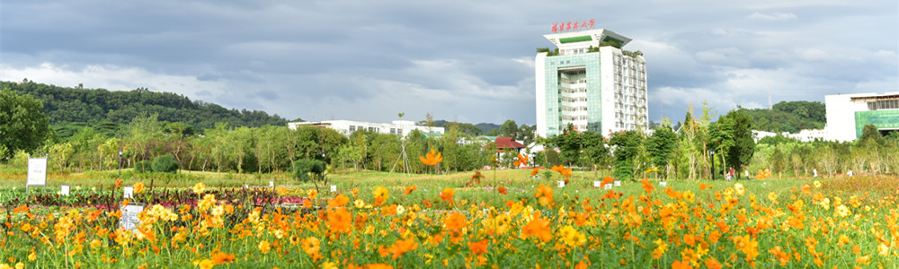
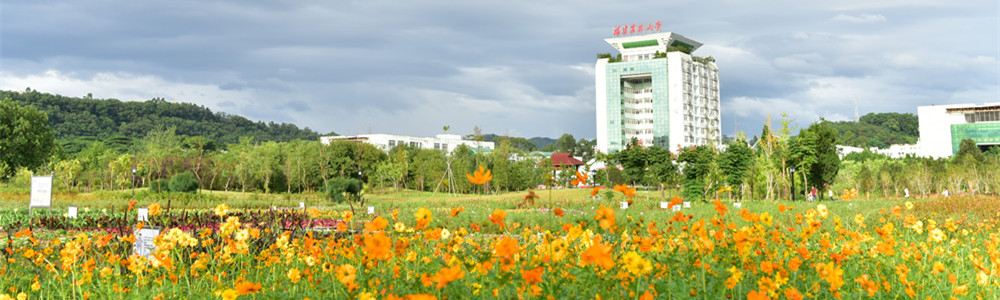

福建农林大学是农业农村部、国家林业和草原局与福建省政府共建大学，是福建省一流大学重点建设高校。福建农林大学的前身是1936年私立福建协和大学设立的农科和1940年创办的福建省立农学院。学校秉承“研究农业高深学术，造就专门人才”的办学宗旨,坚持以立德树人、强农报国、建设一流大学为使命，积累了丰富的办学经验，形成了鲜明的办学特色，成为一所学科门类多样、培养层次完整、师资力量雄厚、学术影响广泛的研究教学型大学。办学80多年来，学校在培养高质量人才、开展高水平科学研究、提供高效益的社会服务等方面取得了丰硕的办学成果。
学校是福建省省属高校中最早招收研究生和最早获博士、硕士学位授予权的高校。学校积极构建“一体两翼”学科发展格局，即以农林生物学科为主体，具有农林特色的工科和人文社科为两翼，促进农工、农文交叉融合和协调发展。学校现有2个国家重点学科（含培育），2个农业农村部重点学科，7个国家林业和草原局重点学科；6个福建省高峰学科，12个福建省高原学科。学校现有12个一级学科博士点，27个一级学科硕士点，16个硕士专业学位授权点，11个博士后科研流动站，学位点覆盖了经济学、法学、理学、工学、农学、管理学、艺术学7个学科门类。学校有植物学与动物学、农业科学2个学科领域进入ESI全球前1%行列。
在全国第四轮学科评估中，学校21个一级学科参评，共有17个学科进入榜单。B类学科有10个，其中B+档学科4个（植物保护、林学、生态学、风景园林学）、B档学科2个（生物学、食品科学与工程）、B-档学科4个（林业工程、园艺学、农业资源与环境、农林经济管理）；C类学科有7个，其中C+档学科3个（马克思主义理论、作物学、公共管理）、C档学科1个（畜牧学）、 C-档学科3个（统计学、兽医学、工商管理）。相比全国第三轮学科评估结果，学校排位进入前10%至20%学科数增加了4个，排位进入前50%学科数由7个增加至13个，绝对进步的学科9个，相对进步学科1个，学科整体水平提升较大。
2017年，学校结合“两个十五年”战略安排制定了中长期发展战略，持续坚持“局部创优势，整体上水平”学科建设思路，按照“把握学科发展前沿，服务国家和区域重大需求”要求，构建“一体两翼”学科发展布局，从“6+12+x”三个层次分类建设高峰学科、高原学科和培育学科，推动学科健康发展，提升学科整体水平。
当前，学校深入贯彻落实党的十九大精神，紧紧抓住国家和福建省“双一流”建设的重大战略机遇，扎实推进“双一流”建设，朝着建设优势明显、特色鲜明、国内知名的一流农林大学的奋斗目标阔步迈进，积极打造福建农林大学“升级版”，努力为国家和新福建建设做出新的更大贡献。
一、国家、部级重点学科
1.国家重点学科（含培育）（2个）
植物病理学、作物遗传育种
2.农业农村部重点学科（2个）
植物病理学、作物遗传育种
3.国家林业和草原局重点学科（7个）
林学、林业工程、风景园林学、生物学、生态学、农业资源与环境、农林经济管理
二、福建省高峰、高原学科
1.高峰学科（6个）
植物保护、林学、食品科学与工程、作物学、林业工程、农业资源与环境
2.高原学科（12）
园艺学、农林经济管理、生物学、生态学、风景园林学、马克思主义理论、农业工程、环境科学与工程、畜牧学、兽医学、工商管理、公共管理
三、学位点
1.博士学位授权一级学科点（12个）
作物学、植物保护、园艺学、林学、生物学、农林经济管理、林业工程、食品科学与工程、农业资源与环境、生态学、风景园林学、农业工程
2.硕士学位授权一级学科点（27个）
作物学、植物保护、园艺学、林学、生物学、农林经济管理、林业工程、食品科学与工程、农业资源与环境、畜牧学、农业工程、兽医学、机械工程、交通运输工程、环境科学与工程、应用经济学、马克思主义理论、工商管理、公共管理、生态学、风景园林学、统计学、计算机科学与技术、化学工程与技术、水产、设计学、地理学
3.专业学位授权点（16个）
金融、电子信息、机械、材料与化工、土木水利、生物与医药、交通运输、农业硕士、兽医硕士、风景园林、林业、工商管理、公共管理、法律、会计、艺术硕士
4.普通本科专业（79个）
学校设有79个普通本科专业（2014级起适用），其中中外合作办学专业4个，闽台合作办学专业6个。


 闽公网安备35010402350912号，网络安全等级保护备案编号35011943059-00001
闽公网安备35010402350912号，网络安全等级保护备案编号35011943059-00001